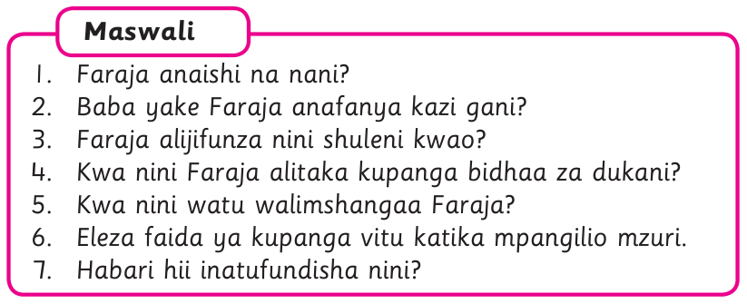
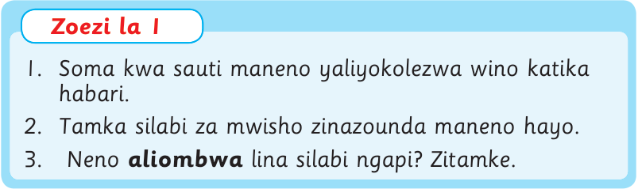

Faraja alimwambia baba yake kuhusu somo walilojifunza shuleni. Alimwambia kuwa walijifunza jinsi ya kukusanya na kuhesabu vitu. Walijifunza pia kupanga vitu katika makundi yanayofanana.
Faraja alitaka kutumia ujuzi wake wa kupanga vitu. Alimwomba baba yake wapange wote bidhaa za dukani. Baba yake alifurahi sana. Alimweleza Faraja kuwa bidhaa zinapaswa kupangwa vizuri. Kupanga bidhaa vizuri huvutia wanunuzi. Aidha, bidhaa zinatakiwa kuhesabiwa ili kujua idadi yake.
Hatimaye, Faraja na baba yake walianza kupanga bidhaa. Faraja aliombwa apange bidhaa sehemu anayoweza kufikia. Watu waliopita karibu na duka hilo walimshangaa Faraja. Waliona jinsi alivyokuwa anapanga bidhaa vizuri. Faraja na baba yake walimaliza kazi mapema. Kazi iliyofanywa na Faraja ilimfurahisha sana baba yake. Aliahidi kumnunulia Faraja zawadi. Faraja anapendwa sana na wazazi wake.
Maswali

1. Faraja anaishi na nani?
2. Baba yake Faraja anafanya kazi gani?
3. Faraja alijifunza nini shuleni kwao?
4. Kwa nini Faraja alitaka kupanga bidhaa za dukani?
5. Kwa nini watu walimshangaa Faraja?
6. Eleza faida ya kupanga vitu katika mpangilio mzuri.
7. Habari hii inatufundisha nini?

1. Soma kwa sauti maneno yaliyokolezwa wino katika habari.
2. Tamka silabi za mwisho zinazounda maneno hayo.
3. Neno aliombwa lina silabi ngapi? Zitamke.